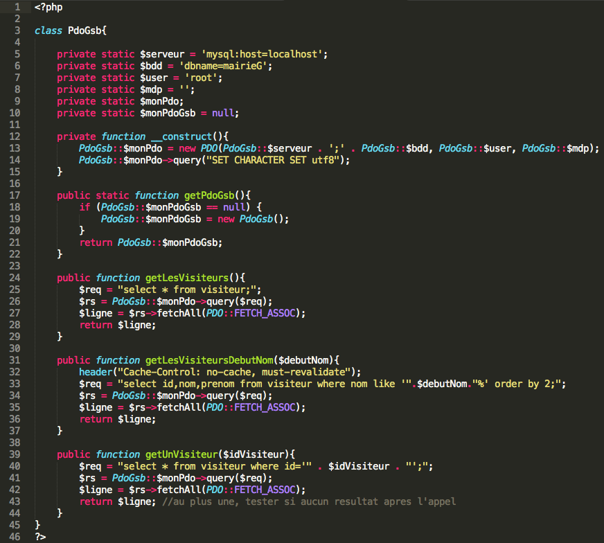
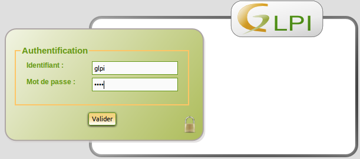
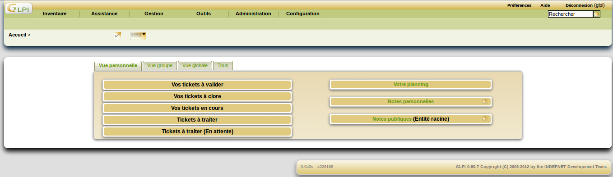

Après mes études, j'ai décidé de me spécialiser dans le développement front-end, et plus particulièrement l'intégration web, et ce depuis 2017. Je réalise des sites web en intégrant les maquettes faites par les graphistes. Je prends en compte la problématique du responsive design ainsi que celle du référencement naturel. J’interviens seule ou en équipe selon les projets.
J’aime découvrir de nouvelles choses et notamment avoir une vision d'ensemble sur les projets qui me sont confiés, c'est pourquoi à terme, j'aimerai pouvoir évoluer sur la partie graphique (conception de maquettes, logos..) et sur le développement back-end, afin d'avoir toutes les cordes à mon arc pour être le plus efficace possible.
Compétences
Savoir-faire
Langages
HTML
80%
CSS
60%
jQuery
40%
Javascript
20%
Java
10%
PHP
50%
SQL
50%
Angular5
20%
Bootstrap
60%
SASS
20%
CMS
Wordpress
30%
TYPO3
10%
Logiciels
Photoshop
50%
Adobe XD
30%
Cordova
15%
Git
30%
Experience
Mon expérience professionnelle
Avril 2019 - Maintenant
Hitpart (PartenorGroup)
Intégratrice web (CDI)
Intégration de maquettes
Développement de nouvelles fonctionnalités
Rédaction de documentation technique et fonctionnelle
Octobre 2018 - Mars 2019
Kang
Développeuse frontend (CDD)
Refonte du site internet : responsive design, référencement naturel
Développement de nouvelles fonctionnalités
Novembre 2017 - Septembre 2018
TestWe
Intégratrice web (CDI)
Refonte du site internet : animations CSS, responsive design, référencement
Développement de nouvelles fonctionnalités
Emailing
Veille technologique du marché
Community management
Avril 2016 - Avril 2017
Wag Interactive
Développeuse frontend junior (alternance)
Formation autonome à Wordpress
Tâches diverses (correction de fichiers excel, création de tableaux HTML/CSS…)
Décembre 2014 - Janvier 2015
Senzo
Développeuse (stage)
Création d’un site internet pour un auto-entrepreneur
Tests de responsive design pour application mobile
Mai 2014 - Juillet 2014
Mairie de Goussainville
Développeuse (stage)
Maintenance du matériel informatique et déploiement dans les structures
Création d’une interface pour un annuaire dynamique
Portfolio
Mes projets
OptimRessource
Projet professionnel
MNH
Projet professionnel
Kang
Projet professionnel
TestWe
Projet professionnel
Videoclubix 2.0
Projet personnel/professionnel (alternance)
Wordpress
Projet professionnel/personnel (alternance)
Mairie de Goussainville
Stage de 1ère année (BTS)
Veille technologique
Thème : Responsive Design
Gestionnaire Libre de Parc Informatique
Projet scolaire
Agence Digitale SENZO
Stage de 2ème année (BTS)
Galaxy Swiss Bourdin
Projet scolaire
Optim Ressource
Projet professionnel
1. Contexte
Dans un contexte interne et afin de faciliter la gestion de projets, il a été décidé de créer un site pouvant à l'avenir, être d'une grande aide pour tous les chefs de projets.
2. Objectif
L'objectif d'OptimRessource est de faciliter la gestion de projets et d'avoir une vue globale aussi bien sur les projets en cours, mais aussi sur ceux en passe d'être acceptés, ainsi que les ressources humaines affectées sur ces derniers.
3. Projet
OptimRessource est un projet interne, qui a terme, aura pour but d'être commercialisé. Il permet au chef de projet d'avoir une vue d'ensemble sur l'avancé des projets. Aussi bien sur ce qu'il reste à faire, mais également les points bloquants pour lesquels il manque de ressources humaines par exemple.
4. Développement
Le projet était déjà développé lorsque je l'ai repris. Ma mission a donc été d'intégrer les maquettes afin de rendre le site plus esthétique, et plus intuitif du côté de l'utilisateur.
De nouvelles fonctionnalités sont actuellement en cours de développement. Le site n'a pour l'instant pas été développé en prenant en compte la problématique du responsive design.
Date : Juin 2019 - Maintenant
MNH
Projet professionnel
1. Contexte
Ma première mission dans le centre de service a été de développer un site pour un client dans le domaine de la santé. Ce même site qui a été présenté au salon "Paris HeathCare Week" du 26 au 28 Mai 2019.
2. Objectif
La demande du client était de créer un annuaire dynamique, de telle sorte à répertorier facilement tous les professionnels de santé. Mais au fur et à mesure du développement le besoin a évolué et les fonctionnalités à intégrer aussi.
3. Projet
MNH (Mutuelle Nationale des Hospitaliers) est un site sur lequel il est possible d'effectuer une recherche pour un professionel de santé précis, que ce soit par son nom ou sa spécialité. Aujourd'hui, le projet n'est pas totalement abouti, il reste encore certaines fonctionnalités qui sont en suspens ou bien, développées mais pas forcément cohérentes avec les données présentes.
4. Développement
Dans un premier temps, dans un souci de délai, j'ai dû intégrer les maquettes réalisées par le graphique. Toutes les données étaient brutes. L'idée était de montrer au client une ébauche du site afin de voir si l'agencement des pages lui convenaient ou s'il y avait des choses à revoir.
Ensuite, lorsque la structure globale du projet a été validé par le client, un binôme de développeurs back-end ont rejoint le projet afin de développer les fonctionnalités souhaitées et de relier la base de données avec l'interface.
Le site a été développé pour être présenté sur un iPad (1024x768), il se peut donc que le responsive ne soit pas totalement correct sur les écrans de petites et grandes résolutions.
Date : Avril - Mai 2019 Liens utiles :Site (Login : test - Mot de passe : 123)
Kang
Projet professionnel
1. Contexte
Kang est une plateforme de mise en relation entre des particuliers et des professionnels dans divers domaines, tels que la voyance, la conception de sites intenet ou encore de la justice avec des avocats. Cette plateforme permet donc de trouver une personne avec un besoin spécifique pour ensuite la mettre en relation avec le professionnel adéquat.
2. Objectif
Consulté chaque jour par une grande quantité d'utilisateurs, la plateforme se devait d'être adaptée à chaque terminal sur lequel il était consulté, hors ce n'était pas le cas.
3. Projet
Il a fallu adapter le site pour qu'il soit consultable sur tablette, mais surtout sur mobile car au vu des statistiques relevées, c'est sur ce dernier que les personnes consultaient le plus la plateforme.
4. Développement
Il y a plusieurs interfaces sur la plateforme. D'un côté, il y a celles utilisée par les clients, à savoir les personnes qui ont un besoin. Et de l'autre, il y a l'interface des "masters", c'est-à-dire les professionnels en freelance qui peuvent répondre aux besoins des clients.
Pour ma mission, j'étais en charge à 80% de mon temps de rendre responsive des pages déjà développées en amont. Le reste de mon temps, j'étais partagée entre le développement de nouvelles fonctionnalités et le fait d'améliorer le référencement du site.
Pendant ces six mois, j'ai aussi eu l'occasion de participer à un hackaton. L'objectif de ce dernier était de reprendre le principe de Tinder (swiper à gauche ou à droite selon si le logo nous plaît ou non) mais appliqué aux logos fait par les freelances présents sur la plateforme. Ma mission a donc été de créer l'interface à partir des maquettes fournies tandis que le restant de l'équipe s'occupait du côté fonctionnel.
Dans le cadre de mes fonctions, j'ai dû me charger de la refonte du site vitrine déjà existant. Dans cette problématique, j'ai également dû gérer le responsive design ainsi que le référencement naturel de celui-ci.
2. Objectif
Améliorer le site d'un point de vue attractif pour les utilisateurs et permettre d'augmenter sa place lors d'une recherche sur Google.
3. Projet
Le site vitrine de TestWe a pour objectif de renseigner l'utilisateur sur la société dans un premier temps, et ensuite, sur ses missions, c'est-à-dire la possibilité d'obtenir des accréditations dans le domaine de la dématérialisation des examens.
4. Développement
Tout d'abord, je suis partie du site vitrine déjà existant. On a gardé la structure générale mais modifier l'agencement des pages ainsi que le contenu.
On a tenté de réduire au maximum le contenu textuel pour le remplacer par des animations ou des images dans le but de captiver l'utilisateur et rendre sa visite plus ludique.
Au cours de cette expérience, j'ai appris énormément de choses, notamment au niveau de la gestion de projet, puisqu'il était reparti en deux parties, d'un côté le front (dont j'étais en charge), et le back (qui correspond à l'application sur laquelle les élèves peuvent passer leur examen). Il fallait donc s'organiser de manière agile afin que de combiner les deux. J'ai également beaucoup appris sur les technologies telles que jQuery avec toutes les animations qui ont été ajouté.
Date : Novembre 2017 - Septembre 2018 Liens utiles :Site vitrine
Videoclubix 2.0
Projet personnel/professionnel - Alternance
1. Contexte
N'ayant participé qu'à de petites tâches sur plusieurs projets, j'ai décidé de créer ce site de vidéoclub afin de pouvoir valider mon titre de Concepteur Développeur Informatique.
2. Objectif
L'objectif de ce site est de permettre à des personnes n'étant pas forcément à côté d'une grande ville, de pouvoir tout de même louer un film et le recevoir chez eux.
3. Projet
Pour commencer, j'ai rédigé toute la documentation du projet afin d'avoir une idée de là où j'allais. Ensuite, j'ai fais la conception (MCD, Diagramme de séquence, création de la base de données..). Et pour finir, je me suis attaquée au développement même du site.
4. Développement
Tout d'abord, j'ai commencé par installer le framwork Symfony 3 ainsi que son ORM, Doctrine.
Ensuite, j'ai installé le FOSUserBundle, outil qui m'a permis de gérer toutes les fonctionnalités relatives aux utilisateurs, notamment les formulaires d'inscription, de changement de mot de passe etc.
La suite du projet correspond au coeur même du développement. Pour une question de facilité, le développement a été réalisé dans une architecture MVC (Modèle Vue Contrôleur).
Modèle :
Commençons par le modèle, l'intermédiaire entre notre base de données et notre contrôleur. Après création de la base de données, il m'a suffit de taper une commande dans Doctrine afin d'obtenir immédiatement la génération des setters et getters. Une fois ces derniers présents, j'ai rajouté les relations entre les différentes entitées (préparées grâce au MVC), puis j'ai dû remettre à jour le modèle de la base de données pour que les modifications soient prises en compte et qu'elles apparaissent sur mes tables.
Contrôleur :
Passons maintenant au contrôleur, la partie métier. Rien de très complexe, j'ai simplement rajouté quelques méthodes afin de récupérer les champs dont j'avais besoin. Ensuite, j'ai renvoyé les paramètres nécessaires aux vues, qui sont affichés grâce au moteur de template Twig, légèrement différent du PHP, mais qui reste dans la même optique, tout en étant plus rapide et en permettant une sécurité plus renforcée.
Vue :
Et enfin, dernière partie de l'architecture MVC, la vue. Ici encore, rien de très complexe, je me contentée d'afficher les attributs dont j'avais besoin. Par exemple, pour la liste des films : la couverture de la pochette, le titre, la description, la date de sortie, la durée, la catégorie à laquelle appartient le film ainsi que les acteurs qui jouent dedans.
Afin de pouvoir aider sur un projet en cours, j'ai dû me familiariser avec le CMS Wordpress, aussi bien au niveau du front-office que du back-office. Pour cela, j'ai suivi une formation en ligne et j'ai crée mon propre site.
2. Objectif
L'objectif de cette mission était de me familiariser avec le back-end de Wordpress ainsi que tout ses plugins disponibles.
3. Projet
Pour commencer, j'ai crée un compte wordpress et installé tout le nécessaire avant de débuter réellement le projet. Après que tout soit opérationnel, j'ai construit mon site étape par étape.
4. Développement
Tout d'abord, j'ai trouvé un nom pour mon site. Je l'ai nommé Autophokus en référence à l'autofocus d'un appareil photo. Sur les pages qui vont suivre, elles sont basées sur un template offert par Wordpress. Toutes se basent sur cette structure, il y a des centaines différentes bien évidemment, à chacun son esthétique.
La page A propos se constitue d'un corps et d'une sidebar. Dans celle-ci sont présents divers plugins incorporés à Wordpress. En l'occurence ici, celui de recherche, map et calendrier d'évènements à venir.
Un autre plugin très pratique, celui du formulaire de contact. Il est déjà tout prêt, il ne reste plus qu'à mettre les valeurs par défaut que vous souhaitez, rajouter ou supprimer des champs et le tour est joué !
Maintenant que nous avons vu la structure d'une page à travers les yeux de l'utilisateur, nous allons voir ce qui se cache derrière, autrement dit, le back-end, dont voici un bref aperçu.
Nous avons donc plusieurs onglets de disponible. Dont celui qui nous sert à créer pages et articles. Toutes les pages sont répertoriées ci-dessous de manière à pouvoir les modifier et obtenir les informations les concernant rapidement.
Nous voici maintenant dans une page que nous pouvons modifier à notre guise. Mais la partie la plus intéressante, reste celle de droite. Les parties Publier et Attributs de la page nous permettent de voir toutes l'historique des modifications, l'état de la page (si elle est publiée ou non), quant aux attributs de la page, ils permettent de la rattacher, ou non à une page parent et à déterminer dans quel ordre elle doit apparaître. Ces catégories ne sont bien évidemment pas obligatoires, et peuvent même être désactivées.
Nous avons également la possibilité de créer une galerie, ce qui permet d'avoir plusieurs images réunies, comme le démontre la page ci-dessous. Elles peuvent être placé de différentes manières et remaniées au bon vouloir du créateur. Rondes, carrées, en ligne ou en colonne.
Et pour finir, la page Venir qui fait appel au plugin de localisation, affichant le lieu donné en adresse, et permettant aux futurs intéressés de trouver facilement l'adresse.
Ceci n'est qu'une ébauche des possibités qu'offre le CMS Wordpress, entre ses plugins et autres fonctionnalités, c'est un gain de temps énorme, même si tout n'est pas forcément modifiable comme on le souhaiterait.
Dans le cadre de mon stage de 1ère année de BTS, j'ai travaillé dans une mairie. Plusieurs tâches m'ont été confié pendant les six semaines où j'étais sur place. Certains orientées développement et d'autres un peu plus axées sur le matériel et le réseau. Mais toutes aussi intéressantes les unes que les autres.
2. Objectif
L'objectif de ce stage était de mettre à profit les compétences acquises lors de ma formation pour les mettre à disposition de l'équipe de développement.
3. Projet
En premier lieu, j’ai commencé par faire une migration de logiciels dans la majorité des services internes à la mairie. Pour cela, j’ai dû désactiver des fonctionnalités afin que le travail du DSI puisse être accompli. Il s’occupait de la récupération des mots de passe des différents utilisateurs afin de les migrer vers une autre boîte mail (d’Outlook vers Zimbra). De mon côté, je devais désactiver directement, sur chaque poste, des fonctionnalités afin que cela ne produise pas d’interférences avec la nouvelle boîte mail mise en place.
La deuxième tâche que l’on m’a confié, consistait à installer différents logiciels sur des ordinateurs neufs, afin que lors du déploiement dans les divers services, ils soient déjà prêts à l’utilisation. Il a donc fallu que j’effectue cette installation pour deux services externes à la mairie, d’abord les écoles, puis, la médiathèque. Pour poursuivre, je me suis vu confier une autre tâche toute à fait différente, mais tout aussi intéressante, celle d’installer des onduleurs.
Les formes peuvent varier mais l’utilité reste la même. Ils s’installent au niveau de la baie électrique de chaque établissement et a pour rôle de prendre le relais en cas de coupure de courant. C’est-à-dire que même lors d’une coupure d’électricité, les onduleurs, eux, fonctionneront toujours. Et enfin, la dernière tâche, était de la maintenance, que ce soit au sein de la mairie ou bien à l’extérieur.
4. Développement
Mon projet principal restait quand même celui de créer une base de données (déjà existante) sous un autre système d’exploitation (de Windows vers Linux), puis faire un annuaire permettant de rechercher rapidement une personne par son nom et obtenir les informations lui correspondant.
Pour cela j’ai dû entrer les noms de tous les employés de la mairie ainsi que leurs informations respectives (service, numéro de téléphone, identité etc)
Ensuite, j'ai dû créer la base de données en ligne de commande sous Linux. Une fois cette opération terminée, j’ai crée l'annuaire, une page HTML basique contenant une liste déroulante comme ci-dessous.
Le but étant de saisir le début du nom de la personne recherchée, et dynamiquement, afficher les noms correspondant au début de la saisie. Pour cela, j'ai utilisé plusieurs langages informatiques tels que Javascript (pour le côté dynamique), HTML (pour la page avec la liste déroulante), PHP (pour la relation avec la base de données) ainsi que du XML pour construire le fichier contenant les employés par la suite. Voici quelques extraits du code que j’ai réalisé ci-dessous.
Ce premier correspond à la liste déroulante. Le onkeyup de la balise input est l'évènement qui déclenchera le javascript. Il permettra de faire apparaître les noms des employés débutant par la saisie qu'à fait l'utilisateur.
Voici le fichier XML qui va permettre de construire la chaîne XML de manière dynamique.
Le fichier ci-dessous est celui qui va permettre de se connecter à la base de données et faire les requêtes SQL portant sur celle-ci.

Et pour finir, le dernier fichier qui est du Javascript. Nous commençons tout d'abord par faire une requête en Ajax, avant de récupérer les éléments grâce au DOM avec l'id des champs crées pour la liste déroulante.
Dans le cadre de ma formation en BTS, nous avons pour devoir de réaliser une veille technologique sur un thème spécifique. Celui qui nous a été confié était celui du Responsive Design.
2. Objectif
L'objectif de cette veille est de rester toujours informé quant aux dernières nouveautés technologiques. En l'occurence ici, la technologie du responsive design.
3. Projet
Individuellement, nous devions créer une page web responsive. Qu'est-ce que le responsive design ? C'est un des mots clés que tout développeur se doit de connaître.
Le responsive design est un principe incontournable de la conception web. Il permet d'adapter le site consulté par un internaute en fonction du terminal qu'il utilise (ordinateur, tablette, smartphone).
4. Développement
Avant toute chose, voilà le principe du Responsive Design en image.
Voici donc la page HTML sur laquelle j'ai réalisé mes tests, et voici le code de cette dernière :
Ensuite pour la partie où on l'on gère le responsive design, ce sera sur le fichier CSS avec ce code :
Ce qui permet la gestion du Responsive Design sur un site, ce sont les media queries représentées par un @media dans l'image ci-dessous. Nous allons donc pouvoir avoir un seul et unique site, ce qui est plus facile pour la maintenance, mais nous pourrons adapter la visibilité et la lecture de l'internaute en fonction des différents terminaux utilisés pour le consulter.
Solution opensource de gestion de parc informatique et de helpdesk, GLPI est une application Web gratuite et très reconnue pour gérer l’ensemble des problématiques de gestion de parc d’un service informatique.
La solution propose la gestion et l’inventaire des composantes matérielles ou logicielles, la possibilité donnée aux utilisateurs de faire remonter leurs questions ou incidents grâce aux tickets d'incidents. La répartition de ces derniers est faite aux techniciens selon leur difficulté et niveau de priorité.
2. Objectif
Dans la peau d'un technicien, nous avons été chargé de concevoir et réaliser un « pilote » pour équiper
les visiteurs en STA (Solution Technique d’Accès) notamment pour l’accès à l’application Web de gestion de leurs frais professionnels.
3. Projet
Par groupe de deux, nous devions remplir le tableau ci-dessous tout en prenant soin des besoins du client. Une STA pas trop lourde, pour transporter facilement lors des déplacements, performante et abordable au niveau du prix.
4. Développement
Après avoir procédé à l'installation de GLPI, nous nous retrouvons avec la page d'accueil ci-dessous. Par défaut, les identifiants sont glpi/glpi.

Une fois connecté, nous pouvons accéder à l'interface de la solution, avec les différents onglets permettant la gestion et en particulier, l'inventaire.

L'inventaire est l'endroit où sont répertoriés tous les matériels crées auparavant. Il est possible de les créer à partir d'un certain modèle, afin que certaines informations soient déjà définies par défaut, sinon, il est également possible de les construire de A à Z, en partant du modèle de la STA jusqu'à son fabriquant en passant par son système d'exploitation.
L'intérêt d'avoir cette solution open-source dans une entreprise, c'est également la gestion des tickets d'incidents. C'est-à-dire, que lorsqu'un employé de l'entreprise recontre un soucis avec son matériel, il remplit un ticket d'incident, en précisant plusieurs informations, comme l'urgence de celle-ci et la description du problème rencontré.
A partir de là, un technicien prend en charge la demande, en les triant par ordre de priorité. Il voit ce qu'il peut faire et une fois qu'il a pris en charge le ticket d'incident, il doit remplir la partie du bas. Celle qui permet à l'utilisateur qui a rencontré le problème de voir l'avancée de sa demande.
Et pour finir, afin de faciliter les choses, les tickets d'incidents peuvent être triés selon leur avancement. En commençant par ceux qui sont en attente, puis, ceux déjà attribués mais pas encore débutés et ceux qui sont en cours de résolution.
Date : Octobre 2014 – Novembre 2014 Cahier des charges :PDF Liens utiles :Site de GLPI
Agence digitale SENZO
Projet professionnel - Stage de BTS, 2ème année.
1. Contexte
Lors de mon stage de deuxième année, j'ai été accueillie par l'Agence SENZO (94), qui est une TPE qui a pour objet de créer des applications et sites web pour divers clients. Le sujet de mon stage a porté sur la création d'un site web pour un client étant auto-entrepreneur dans le domaine des prêts immobiliers. Le but étant de faire connaître son entreprise ainsi que ses services sur la toile.
2. Objectif
Développement d'un site web exposant les services du client. Possibilité de demandes en ligne ainsi que les différents calculs de prêt et toutes les informations essentielles dont les futurs potentiels clients pourraient avoir besoin.
3. Projet
Avant toute chose, afin que la compréhension du lien entre le Framework Zend et Pimcore soit claire, voici un petit document d'explication.
Le projet qui m'a été confié était de créer un site internet. Pour cela il m'a fallu utiliser divers outils informatiques tels que le CMS Pimcore ainsi que l'IDE Netbeans mais également le logiciel de version, Git.
Pour réaliser le projet, il a fallu utiliser des templates (aussi appelé layout), c'est-à-dire une certaine structure prédéfinie des pages composant le site. Plus exactement, nous en avons utilisé 4 différents. Pour plus de détails vous pouvez consulter cette page en allant dans la section "Pages" et "Layouts" où les trois templates utilisés sont présentés, et enfin, le dernier est dans la section "Pages", c'est le "Custom Header".
4. Développement
Pour commencer, j'ai utilisé Pimcore afin de créer l'arborescence principale, autrement dit le menu ainsi que les sous menus qui le compose. La deuxième partie concerne les différents footers utilisés pour le site, mais cette tâche ne m'a pas été confiée. Voici ci-dessous l'aperçu dans Pimcore de la création des documents constituant le menu principal, regroupant les sept onglets (le dossier main-menu).
Et voici l'aperçu des onglets crées précedemment dans Pimcore au niveau du site en lui-même.
Tout d’abord, j’ai dû utiliser des templates afin de faire le squelette du site avant même de remplir les différentes pages. Pour cela, j’ai utilisé l’outil Pimcore qui m’a servi à introduire divers champs, comme un wysiwyg (de l’anglais « What you see is what you get », autrement dit « Ce que l’on voit est ce qu’on a ») ou
bien une image ou encore un input.
Une fois le squelette entièrement crée, il a fallu remplir les pages. Pour cela, j'ai commencé par les pages « simples », c’est-à-dire celles qui ne nécessitaient pas de fonctions particulières. Ces pages sont les suivantes : Prêt immobilier, qui sommes-nous, recrutement ainsi que mentions légales. En revanche, ce n'est pas moi qui est été en charge du plan du site, de l'accueil et de la page de contact.
Ici, le footer réalisé, qui est divisé en trois parties pour une question de référencement. Ensuite, je me suis attaquée à la page Prêts immobiliers évoquée un peu plus haut. Elle est issue d'un template contenant une colonne sur la droite, aussi appelé snippet (portion de code ou page réutilisable). Elle contient la durée des prêts ainsi que leur taux. Des pictogrammes ont été insérés afin de savoir si le taux est en hausse, en baisse ou égal à son taux précédent.
Nous passerons les pages Qui sommes-nous ainsi que recrutements qui sont des pages contenant uniquement du texte. En revanche, j'ai dû développer le formulaire de demande de prêt, principalement en HTML et CSS.
Et pour finir, voici deux autres pages que j'ai développé : banques
Et lexique.
Date : Septembre - Novembre 2014 Rapport :PDF Liens utiles :Site du client
GSB : Galaxy Swiss Bourdin
Projet scolaire réalisé en BTS.
1. Contexte GSB
Le laboratoire Galaxy-Swiss-Bourdin souhaite mettre en place une application web de gestion des frais à disposition de ses visiteurs médicaux.
L’application doit permettre d’authentifier deux types d’utilisateurs : visiteur et comptable, d’ajouter et d’enregistrer tout frais engagés, aussi bien pour l’activité directe (déplacement, restauration et hébergement) que pour les activités annexes (événementiel, conférences, autres), et de présenter un suivi daté des opérations menées par le service comptable (réception des pièces, validation de la demande de remboursement, mise en paiement, remboursement effectué).
2. Objectif
Développement d’une application web dissociant deux parties : visiteur et comptable. Les visiteurs médicaux peuvent saisir leurs frais de déplacements, les comptable peuvent réaliser leur campagne de validation mensuelle des frais saisis au préalable par les visiteurs médicaux.
3. Compétences
A1.1.1 Analyse du cahier des charges d’un service à produire
A1.1.3 Étude des exigences liées à la qualité attendue d’un service
A1.4.2 Évaluation des indicateurs de suivi d’un projet et justification des écarts
A1.4.3 Gestion des ressources
A4.1.1 Proposition d’une solution applicative
A4.1.2 Conception ou adaptation de l’interface utilisateur d’une solution applicative
A4.1.3 Conception ou adaptation d’une base de données
A4.1.6 Gestion d’environnements de développement et de test
A4.1.9 Rédaction d’une documentation technique
A4.1.1 Rédaction d’une documentation d’utilisation
A5.2.1 Exploitation des référentiels, normes et standards adoptés par le prestataire informatique
A5.2.3 Repérage des compléments de formation ou d’auto-formation utiles à l’acquisition de nouvelles compétences
4. Développement
La réalisation de cette application a été fait en autonomie à l’aide des langages HTML, CSS, PHP et SQL.
Pour toutes informations, n'hésitez pas à me joindre soit par mail, soit par l'intermédiaire du formulaire de contact. Si vous n'avez aucun retour de ma part sous une semaine, n'hésitez pas à m'envoyer un mail pour confirmation.